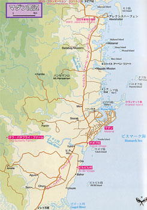

|
第１５ パプア・ニユーギニア・マダンに敵前上陸
 ……話が変わって、戦いすんで、四十年を経た今でも、マダンの沖にその残骸があると聞き胸が痛む思いがする。……この事があって、間もなく、マダン敵前上陸作戦が開始された。その時、夜空には星が満天に輝き、月は出ていない闇夜を選んで、敵前上 陸作戦が今まさに、敢行されたのである。生まれて初めての戦争体験で、しかも敵前上陸作戦だ。 まず、輸送船から上陸用舟艇に乗り移らなければならない。南太平洋の波はかなり大きい。私も必死の覚悟で、行動開始した。輸送船の舷 側に、縄梯子が舷側一杯に垂れ下げてあり、友軍の歩兵部隊の兵士が、すでに群れをなして、縄梯子を下り上陸用舟艇に乗り移っている。暗 闇の中に黒い無数の将兵が、うごめいて居る様は一種異様な光景に感じた。このような上陸作戦の訓練は受けた事はないが皆んな必死だ。私 はそろそろ縄梯子から飛び下りても良い、と判断して舟艇めがけて飛び移った。目測どおり、舟艇は波と共に、上に上がってきて、ショック は感じなかった。このコツが判らない将兵は大変だった。不思議なことに、舟艇に飛び移る寸前に、子供のとき遊んだ記憶が蘇ってきた。 ……戦争中、身の危険に遭遇すると必らず、何時でも子供のときに体験したことが脳裏に浮かび、危険を避けられた。誠に不思議なことであ った。…… 闇夜の下で、黒い海面には無数の上陸用舟艇が浮かんでいた。夥しい舟艇群だ！どこから、これだけの舟艇が来たのであろうか？と、びっ くりしてしまった。今まさに、上陸作戦が始った光景が！眼前に展開している。凄まじい光景だ。上陸用舟艇は、波で上下に大きく揺れ、夜 空には星がまばたいていた。猛軍通信隊山口無線小隊は、舟艇に乗り移つり、発進を待つが、隣の舟艇に乗っている花輪中佐は「発進」とい う命令をなかなか下さない。いらいらした時間がたってゆく。やっとのことで、『発進』という号令が出た。待っていたとばかりに、その号 令と共に数十艘の舟艇が一斉に白波をけって発進した。壮絶な上陸作戦だ。青春の血が一時に逆流し、思はず武者ぶるいしてしまった。上陸 用舟艇にギユウギユウ詰め込まれ、立ったままで立錐の余地もない。無線小隊全員が極度に緊張していた。緊張と不安に襲われ異常な精神状 態に襲われた一人の兵が、風上で嘔吐したので、私はその汚物をモロに顔にかぶってしまった。チエッ！と怒りをかんじた。しかし、そのお 陰で、急にすーっと胸が晴れ、平常心に戻った。不思議だ。上陸用舟艇は陸地に近づいて行く。私はそろそろ上陸開始だと心に決め、海面を 目測し、ここらでよいと判断して、威勢のよい凛々しい大声で 『上陸開始！』 と号令を掛けた。全員がもう無我夢中だ。 『ガソリンが入っている２００リットルドラム缶は、そのまま海に突き落とせ』 『沈んだら、上陸してから、後で取りにくる』 『とにかく、早く全員上陸せよ』 と、次々に号令を掛けた。全員物凄い形相で、海に飛び込んだ。沈むものと思っていたガソリンのドラム缶が海面に浮かんでいるではないか！ この時は嬉しかった。腰まで海水につかり、やっとのことで上陸した。 必死で陸に上陸して、ひょいと、かたわらの藪の所を見たら、海軍さんの通信兵が、無線機を操作し、護衛艦隊の本艦に向かって、「上陸作 戦は成功した」と打電していた。私の心を捕らえた強い一瞬の出来事だった。彼等は直ちにラバウルに戻って行く。我らはこれからが大変だ。 まだ、地上戦闘は始まっていないようだ。突如、右方向の夜空に、緑色の狼煙が沖天高く上がった。私は花輪支隊副官の磯村中尉に、あれは何 ですか？と尋ねたら、私の言葉を耳にした彼は、私には目もくれず、 花輪支隊長に、『右支隊は上陸に成功しました』と報告した。報告が終わるやいなや、こんどは、『俺の方も早く、赤い狼煙を打ち上げろ』 と怒鳴っている。なかなかどうして、磯村中尉は威勢がよい。 ……右方向の夜空に鮮やかな緑色の狼煙が沖天高く上がったのを見て驚いた私だったが、戦後になってから、それは歩兵第四十二聯隊の早川茂 大尉指揮の歩兵一ケ中隊がアレキシスハーフェンに上陸成功した合図だったことを知った。…… |